library(tidyverse) #conté 9 paquets d'edició i visualització
library(here) #al treballar en un projecte
library(readxl) #per importar dades que estan en un fitxer d'excel
library(janitor) #ajudar a netejar les dades
library(skimr) #per obtenir un resum de les dades complert
library(broom) #poder fer servir funcions com tidy
library(factoextra) #Visualització de resultats de PCA i altres anàlisis multivariants
raw_data <- read_excel(here("Basic", "data", "luminex.xlsx"))PCA
PCA = Principal Components Analysis
El primer cop que vaig fer un PCA, el vaig aprendre a fer amb els següents links, potser us son útils:
- https://medium.com/@heyamit10/principal-component-analysis-for-dummies-95f198ff0f16
- https://www.youtube.com/watch?v=3QwZ2GgHSLE
- https://www.datacamp.com/tutorial/pca-analysis-r
En aquest cas us ho ensenyaré amb les dades de luminex que ja us he ensenyat a l’apartat Càlculs. Tot i així, utilitzarem les originals i crearem uns altres percentatger per tal de el pes que els hi dona cada variable depengui del mateix en els diferents teixits, ja que estaven en unitats diferents. Aquest pas NO es necessita en tots els casos, dependrà de les vostres dades!
Començarem carregant les llibreries necessàries i les dades:
En aquest cas també crearem unes noves columnes anomenades tissue_group i rat_tissue, on tindrem la informació combinada. Això ho creem per després poder colorejar el nostre PCA com més ens interessi.
data <- raw_data %>%
mutate(across(c(group, sex, rat, tissue), as.factor)) %>%
mutate(tissue_group = paste0(tissue, "_", group)) %>%
mutate(across(c(tissue_group), as.factor)) %>%
mutate(rat_tissue = paste0(rat, "_", tissue)) %>%
column_to_rownames("rat_tissue") %>%
na.omit()
data_PCA <- data %>%
mutate(Ig_total = IgG1 + IgG2a + IgG2b + IgG2c + IgA + IgM) %>%
mutate(perc_IgG1 = (IgG1/Ig_total)*100) %>% #Millor no utilitzar el % ja s'utilitza per fer operacions
mutate(perc_IgG2a = (IgG2a/Ig_total)*100) %>%
mutate(perc_IgG2b = (IgG2b/Ig_total)*100) %>%
mutate(perc_IgG2c = (IgG2c/Ig_total)*100) %>%
mutate(perc_IgM = (IgM/Ig_total)*100) %>%
mutate(perc_IgA = (IgA/Ig_total)*100)
skim(data_PCA)| Name | data_PCA |
| Number of rows | 60 |
| Number of columns | 18 |
| _______________________ | |
| Column type frequency: | |
| factor | 5 |
| numeric | 13 |
| ________________________ | |
| Group variables | None |
Variable type: factor
| skim_variable | n_missing | complete_rate | ordered | n_unique | top_counts |
|---|---|---|---|---|---|
| rat | 0 | 1 | FALSE | 20 | D1: 3, D10: 3, D2: 3, D3: 3 |
| group | 0 | 1 | FALSE | 2 | DIE: 30, REF: 30 |
| tissue | 0 | 1 | FALSE | 3 | HCC: 20, HML: 20, RI: 20 |
| sex | 0 | 1 | FALSE | 2 | F: 30, M: 30 |
| tissue_group | 0 | 1 | FALSE | 6 | HCC: 10, HCC: 10, HML: 10, HML: 10 |
Variable type: numeric
| skim_variable | n_missing | complete_rate | mean | sd | p0 | p25 | p50 | p75 | p100 | hist |
|---|---|---|---|---|---|---|---|---|---|---|
| IgA | 0 | 1 | 126.52 | 22.89 | 88.00 | 108.75 | 128.00 | 143.50 | 175.00 | ▆▇▇▆▂ |
| IgM | 0 | 1 | 91.92 | 12.41 | 68.00 | 82.00 | 92.00 | 100.00 | 120.00 | ▃▇▇▅▂ |
| IgG1 | 0 | 1 | 210.40 | 29.00 | 158.00 | 189.50 | 214.00 | 232.00 | 265.00 | ▆▇▇▇▃ |
| IgG2a | 0 | 1 | 159.13 | 22.68 | 118.00 | 144.25 | 157.00 | 175.75 | 205.00 | ▅▇▇▅▃ |
| IgG2b | 0 | 1 | 149.10 | 22.70 | 108.00 | 134.25 | 147.50 | 165.75 | 195.00 | ▅▇▇▅▃ |
| IgG2c | 0 | 1 | 139.10 | 22.70 | 98.00 | 124.25 | 137.50 | 155.75 | 185.00 | ▅▇▇▅▃ |
| Ig_total | 0 | 1 | 876.17 | 131.43 | 646.00 | 791.00 | 873.00 | 961.75 | 1145.00 | ▅▇▇▅▂ |
| perc_IgG1 | 0 | 1 | 24.06 | 0.47 | 23.14 | 23.79 | 24.01 | 24.38 | 25.61 | ▃▇▆▂▁ |
| perc_IgG2a | 0 | 1 | 18.18 | 0.28 | 17.55 | 18.01 | 18.14 | 18.38 | 18.73 | ▂▅▇▇▃ |
| perc_IgG2b | 0 | 1 | 17.01 | 0.23 | 16.46 | 16.90 | 17.04 | 17.17 | 17.41 | ▁▅▆▇▃ |
| perc_IgG2c | 0 | 1 | 15.85 | 0.31 | 15.17 | 15.58 | 15.95 | 16.10 | 16.26 | ▃▃▁▇▆ |
| perc_IgM | 0 | 1 | 10.52 | 0.30 | 9.92 | 10.29 | 10.48 | 10.77 | 11.15 | ▃▇▇▇▃ |
| perc_IgA | 0 | 1 | 14.38 | 0.61 | 12.93 | 14.03 | 14.33 | 14.98 | 15.28 | ▁▃▇▅▇ |
PCA
El PCA realment és la ordenació dimensional, trobar els components principals. N’hi haurà tants com variables utilitzis.
Definicions
Jo no recomano canviar mai el nom de les variables, grups, etc dins del dataframe. Per tant a mi em funciona molt bé definir-ho tot amb vectors. Ho recomano fer a l’inici per tant ho podeu cridar en qualsevol moment.
theme_set(theme_classic())
group_order <- c("REF", "DIET")
tissue_group_order <- c("HCC_REF", "HCC_DIET", "RI_REF", "RI_DIET", "HMLN_REF", "HMLN_DIET")
group_color <- c("REF" = "#5c5c5c",
"DIET" = "salmon")
tissue_color <- c( HCC = "#8C5A3C",
RI = "#E76F8A",
HMLN= "#E9D8A6")
tissue_group_color <- c(HCC_REF = "#8C5A3C",
HCC_DIET = "#CDA690",
RI_REF = "#E76F8A",
RI_DIET = "#F4B6BF",
HMLN_REF = "#E9D8A6",
HMLN_DIET = "#F5EAD0")
tissue_group_name <- c( HCC_RD = "RD (Cecal Content)",
HCC_AD = "AD (Cecal Content)",
RI_RD = "RD (Gut Wash)",
RI_AD = "AD (Gut Wash)",
HMLN_RD = "RD (Mesenteric Lymph Nodes)",
HMLN_AD = "AD (Mesenteric Lymph Nodes)")
tissue_name <- c(
HCC = "Cecal Content",
RI = "Gut Wash",
HMLN= "Mesenteric Lymph Nodes")
variable_name <- c(
IgA = "IgA",
IgG = "IgG",
IgM = "IgM",
IgG1 = "IgG1",
IgG2a = "IgG2a",
IgG2b = "IgG2b",
IgG2c = "IgG2c",
Ig_total = "Total Ig",
perc_IgA = "%IgA",
perc_IgG = "%IgG",
perc_IgG1 = "%IgG1",
perc_IgG2a = "%IgG2a",
perc_IgG2b = "%IgG2b",
perc_IgG2c = "%IgG2c",
perc_IgM = "%IgM",
perc_Th1 = "%Th1",
perc_Th2 = "%Th2",
Th1 = "Th1",
Th2 = "Th2",
Th1vsTh2 = "Th1/Th2")Comprovacions prèvies
Per a poder-lo fer, no poden tenir cap NA ni que una columna no tingui variabilitat. Per tant senpre s’haurà de fer na.omit() en el primer cas, i com que s’ha de treballar amb dades wide es perdran rates.
- Una alternativa seria omplir els forats amb la mitjana del grup, d’aquesta manera no perdries la resta de valors.
data_analize<- data_PCA %>%
group_by(group, tissue) %>% #i totes les variables que formin els grupets de dades
mutate(across(
where(is.numeric),
~ ifelse(is.na(.), mean(., na.rm = TRUE), .)
)) %>% #canviem els NA per la mitjana d'aquell metabolit dins del grup
ungroup() %>%
select(5:ncol(.)) #dades que han de servir per la ordenació (de la columna 2 al final)Per a la variabilitat dins de les columnes ho mirem de la següent manera:
zero_var_cols <- apply(data_PCA, 2, function(x) var(x, na.rm = TRUE) == 0) # Identify columns with zero variance Warning in var(x, na.rm = TRUE): NAs introduced by coercion
Warning in var(x, na.rm = TRUE): NAs introduced by coercion
Warning in var(x, na.rm = TRUE): NAs introduced by coercion
Warning in var(x, na.rm = TRUE): NAs introduced by coercion
Warning in var(x, na.rm = TRUE): NAs introduced by coercionsum(zero_var_cols) # Check how many columns were removed[1] NASi no n’hi ha cap problema, endavant. Si n’hi haguès s’haurien d’eliminar aquestes variables per a poder fer el PCA.
Components principals
pca <- data_PCA %>%
select(perc_IgG1, perc_IgG2a, perc_IgG2b, perc_IgG2c, perc_IgM, perc_IgA) %>%
prcomp(center = T, scale. = T)#pca
print(pca)Standard deviations (1, .., p=6):
[1] 1.727996e+00 1.449058e+00 8.403768e-01 4.493208e-01 7.836007e-02
[6] 3.827947e-15
Rotation (n x k) = (6 x 6):
PC1 PC2 PC3 PC4 PC5 PC6
perc_IgG1 -0.3279081 -0.4191769 -0.65158192 0.2241481 -0.035155907 0.4906421
perc_IgG2a 0.3720874 -0.4858332 0.10472522 -0.6391883 0.349351627 0.2897267
perc_IgG2b 0.5688243 -0.1110887 0.04897727 0.1141342 -0.767826888 0.2431352
perc_IgG2c 0.5155479 0.2650386 -0.02885384 0.5294103 0.524423173 0.3283861
perc_IgM -0.3293576 -0.3528894 0.74414353 0.3413942 0.003731276 0.3109327
perc_IgA -0.2370657 0.6173652 0.08656050 -0.3624142 -0.110117145 0.6416366summary(pca)Importance of components:
PC1 PC2 PC3 PC4 PC5 PC6
Standard deviation 1.7280 1.4491 0.8404 0.44932 0.07836 3.828e-15
Proportion of Variance 0.4977 0.3500 0.1177 0.03365 0.00102 0.000e+00
Cumulative Proportion 0.4977 0.8476 0.9653 0.99898 1.00000 1.000e+00Aquí ja podeu veure els diferents components principals en cada variable i el % que explica cada un. Com més % expliquin els dos primers components millor. Per a poder-ho observar de manera més fàcil, hem de crear un dataframe que contingui la informació que ens interessa, com la posició dels individus:
pca_data_graph <- as.data.frame(pca$x) %>% #pca$x = posició dels punts
mutate(
group = data$group,
rat = data$rat,
tissue = data$tissue,
sex = data$sex,
tissue_group = data$tissue_group,
cos2 = get_pca_ind(pca)$cos2[, 1] + get_pca_ind(pca)$cos2[, 2] #cos2 = mida dels punts
)
head(pca_data_graph) PC1 PC2 PC3 PC4 PC5 PC6
R1_HMLN -0.2077906 0.2062296 -0.7753717 -0.41952644 -0.053632093 6.661338e-16
R2_HMLN -4.4761258 -1.6621705 -1.3146779 1.35726912 0.131670836 7.216450e-16
R3_HMLN -1.5516212 0.9608107 -0.3927785 -1.52167423 0.406485238 -4.551914e-15
R4_HMLN -2.8072882 0.5843651 1.6325081 0.07440371 0.010227242 -2.442491e-15
R5_HMLN -0.1517235 -0.5860105 -0.4575781 -0.23471322 0.162572384 8.049117e-16
R6_HMLN -2.4288676 0.8688226 -0.5569274 0.14351111 0.006961442 -5.884182e-15
group rat tissue sex tissue_group cos2
R1_HMLN REF R1 HMLN F HMLN_REF 0.09899379
R2_HMLN REF R2 HMLN F HMLN_REF 0.86402489
R3_HMLN REF R3 HMLN F HMLN_REF 0.55830749
R4_HMLN REF R4 HMLN F HMLN_REF 0.75482370
R5_HMLN REF R5 HMLN F HMLN_REF 0.55745292
R6_HMLN REF R6 HMLN M HMLN_REF 0.95264008Un altre gràfic combinat molt interessant és el PCA-Biplot, en el qual també ens indica la importancia de les variables i per a quins individus és més important. Podem obtenir-ho amb els loadings.
loadings <- as.data.frame(pca$rotation) %>% #la fletxa de les variables
rownames_to_column("IgX") %>%
mutate(
PC1 = PC1 * 5,
PC2 = PC2 * 5,
name = variable_name[IgX])
head(loadings) IgX PC1 PC2 PC3 PC4 PC5 PC6
1 perc_IgG1 -1.639541 -2.0958846 -0.65158192 0.2241481 -0.035155907 0.4906421
2 perc_IgG2a 1.860437 -2.4291658 0.10472522 -0.6391883 0.349351627 0.2897267
3 perc_IgG2b 2.844121 -0.5554435 0.04897727 0.1141342 -0.767826888 0.2431352
4 perc_IgG2c 2.577739 1.3251930 -0.02885384 0.5294103 0.524423173 0.3283861
5 perc_IgM -1.646788 -1.7644470 0.74414353 0.3413942 0.003731276 0.3109327
6 perc_IgA -1.185328 3.0868259 0.08656050 -0.3624142 -0.110117145 0.6416366
name
1 %IgG1
2 %IgG2a
3 %IgG2b
4 %IgG2c
5 %IgM
6 %IgAI d’aquesta manera ja hauriem extret tota la informació necessària per a poder fer-ho al ggplot.
Gràfics
Bàsics
Amb la lliberia factoextra podem aconseguir molts gràfics, tot i que son una mica cutres. Tot i així són molt informatius així que com a primer pas per entendre com es comporten les nostres dades són útils:
- Qualitat del PCA (scree plot): quin % aporta cada component
fviz_eig(pca,addlabels = T,ylim=c(0,50)) Warning in geom_bar(stat = "identity", fill = barfill, color = barcolor, :
Ignoring empty aesthetic: `width`.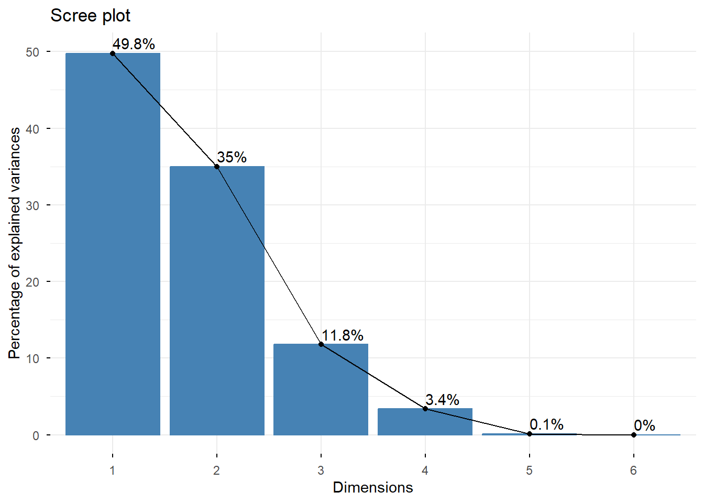
- Com de ben representada està cada IgX en el pla 2D
fviz_cos2(pca, choice = "var")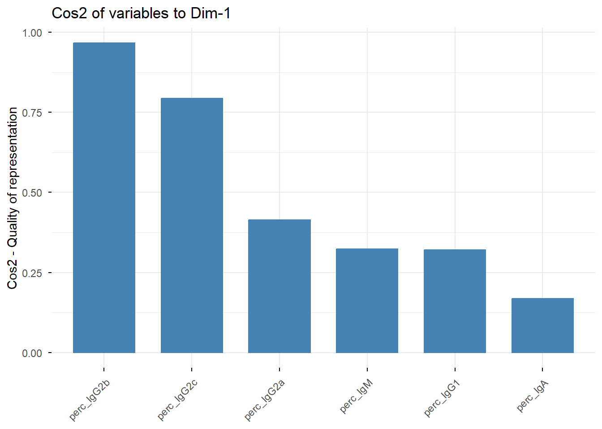
- Quines IgX contribueixen mes a construir cada component (Aquest codi t’ho dona de manera que et diu quines contribueixen als dos primers components alhora, només al primer component i només al segon).
a<- fviz_contrib(pca,choice="var",axes=1:2, top=10)
#Contributions of variable to PC1
b <- fviz_contrib(pca, choice = "var", axes = 1, top=10)
#Contributions of variable to PC2
c <- fviz_contrib(pca, choice = "var", axes = 2, top=10)
library(gridExtra)
grid.arrange(a,b,c,ncol=3,top='Contribution of the top 10 variables to the first two PCs')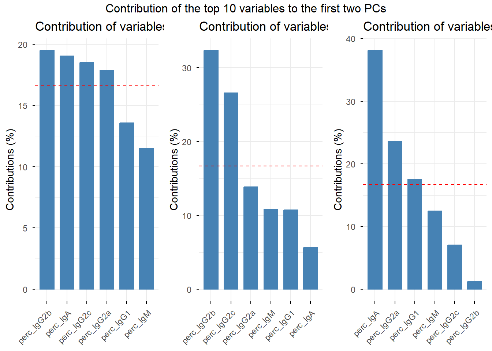
#si afegeixes top= et dona les que mes contribueixen- Contribució dels individus (també ho podries mirar per cada PC, però realment ens interessa en general). En aquest cas es podrien veure outliers, tot i que normalment un o dos individus són més forts que els altres. Tot i així si és descaradament diferent, podriem dir que és outlier.
fviz_contrib(pca,choice="ind",axes=1:2)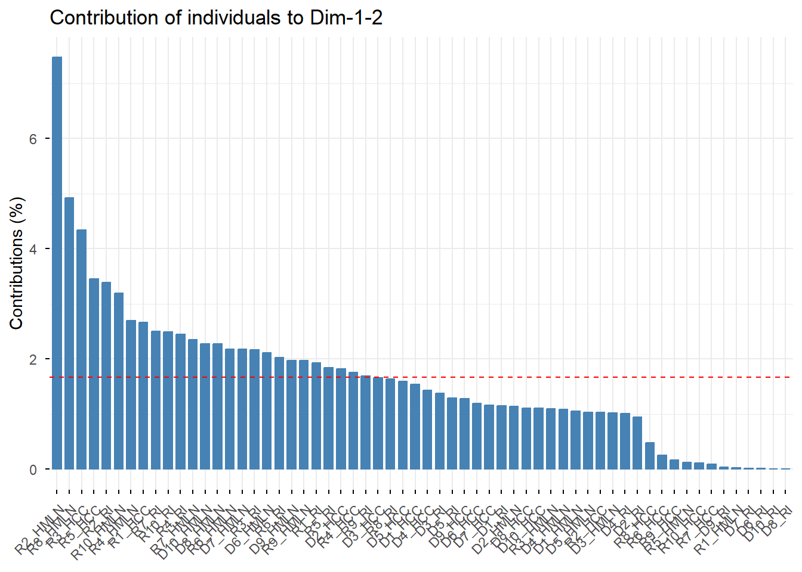
- Cercle de correlacions: com correlacionen les IgX entre elles i amb cada PC. Variables properes al cercle exterior → ben representades.
fviz_pca_var(pca, col.var = "cos2")Warning: Using `size` aesthetic for lines was deprecated in ggplot2 3.4.0.
ℹ Please use `linewidth` instead.
ℹ The deprecated feature was likely used in the ggpubr package.
Please report the issue at <https://github.com/kassambara/ggpubr/issues>.Warning: `aes_string()` was deprecated in ggplot2 3.0.0.
ℹ Please use tidy evaluation idioms with `aes()`.
ℹ See also `vignette("ggplot2-in-packages")` for more information.
ℹ The deprecated feature was likely used in the factoextra package.
Please report the issue at <https://github.com/kassambara/factoextra/issues>.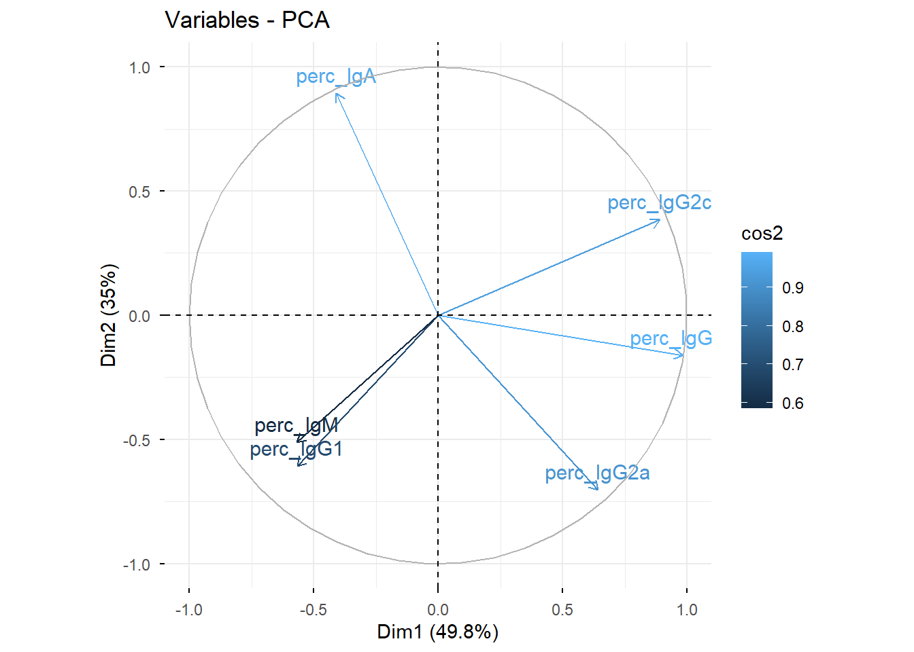
- PCA
fviz_pca_ind(pca, habillage = data$tissue)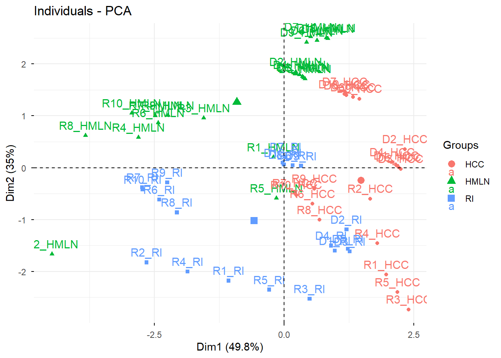
- Biplot
fviz_pca_biplot(pca, habillage = data$tissue)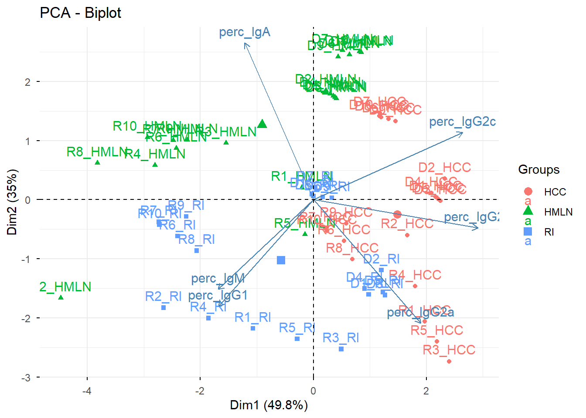
Com podeu veure els gràfics finals de PCA i Biplot són cutríssims, per tant els farem macos i com nosaltres vulguem amb ggplot.
ggplot
Tots els gràfics surten a partir de la informació que tens a pca_data_graph, si no està allà, no apareixerà. Si us hi fixeu tots són iguals, simplement canvia com es veuen i les elipses.
Recordeu que per a guardar els gràfics podeu fer servir:
ggsave(here("output","PCA.png"), width = 8, height = 5, dpi = 300) PCA - Color i forma per grup
PCA <- ggplot(pca_data_graph, aes(x = PC1, y = PC2, color = group, shape = group)) +
geom_point(size = 2, alpha = 0.8) + # Afegir els punts amb les formes i colors
stat_ellipse(aes(color = group, fill = group), alpha = 0.2, geom = "polygon") + # Afegir les elípses amb el mateix color i omplert
scale_color_manual(values = group_color,
name = "Group",
breaks = group_order) + # Custom colors per als punts i les elípses
scale_fill_manual(values = group_color, name = "Group",
breaks = group_order) + # Colors per a l'ompliment de les elípses
scale_shape_manual(name = "Group",
values = c(16, 17),
breaks = group_order) + # Definir formes per als punts
labs(title = "PCA",
x = paste0("PC1 (", round(summary(pca)$importance[2, 1] * 100, 1), "%)"),
y = paste0("PC2 (", round(summary(pca)$importance[2, 2] * 100, 1), "%)"),
color = "Group",
shape = "Group") + # Titols de la llegenda
theme_minimal() +
theme(legend.position = "right",
legend.title = element_text(size = 10),
legend.text = element_text(size = 8),
plot.title = element_text(hjust = 0.5, size = 14),
panel.background = element_blank(), # Treu el color de fons
panel.grid.major = element_blank(), # Treu la quadrícula gran
panel.grid.minor = element_blank(), # Treu la quadrícula petita
axis.line = element_line(color = "black"))
PCAPCA - Color per teixit i forma per grup
PCA_2 <- ggplot(pca_data_graph, aes(x = PC1, y = PC2, shape = group, color = tissue, fill= tissue)) +
geom_point(size = 2, alpha = 0.8) + # Afegir els punts amb les formes i colors
stat_ellipse(aes(group = tissue, color = tissue, fill = tissue), alpha = 0.2, geom = "polygon") + # Afegir les elípses amb el mateix color i omplert
scale_color_manual(values = tissue_color,
name = "Tissue",
labels = tissue_name) + # Custom colors per als punts i les elípses
scale_fill_manual(values = tissue_color,
name = "Tissue",
labels = tissue_name) + # Colors per a l'ompliment de les elípses
scale_shape_manual(name = "Group",
values = c(16, 17),
breaks = group_order) + # Definir formes per als punts
labs(title = "PCA",
x = paste0("PC1 (", round(summary(pca)$importance[2, 1] * 100, 1), "%)"),
y = paste0("PC2 (", round(summary(pca)$importance[2, 2] * 100, 1), "%)"),
color = "Tissue",
shape = "Group") + # Titols de la llegenda
theme_minimal() +
theme(legend.position = "right",
legend.title = element_text(size = 10),
legend.text = element_text(size = 8),
plot.title = element_text(hjust = 0.5, size = 14),
panel.background = element_blank(), # Treu el color de fons
panel.grid.major = element_blank(), # Treu la quadrícula gran
panel.grid.minor = element_blank(), # Treu la quadrícula petita
axis.line = element_line(color = "black"),
legend.box = "vertical")
PCA_2Warning: The following aesthetics were dropped during statistical transformation: shape.
ℹ This can happen when ggplot fails to infer the correct grouping structure in
the data.
ℹ Did you forget to specify a `group` aesthetic or to convert a numerical
variable into a factor?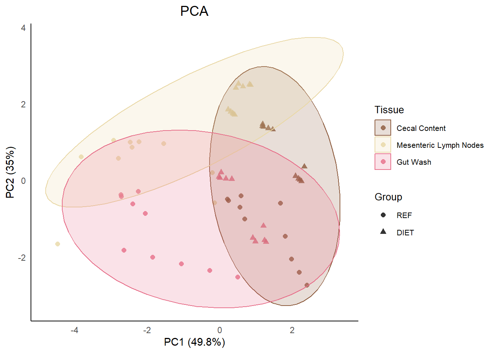
PCA - Color per teixit i grup i forma per grup
PCA_3 <- ggplot(pca_data_graph, aes(x = PC1, y = PC2, shape = tissue_group, color = tissue_group, fill= tissue_group)) +
geom_point(size = 2, alpha = 0.8) + # Afegir els punts amb les formes i colors
stat_ellipse(aes(color = tissue_group, fill = tissue_group), alpha = 0.2, geom = "polygon") + # Afegir les elípses amb el mateix color i omplert
scale_color_manual(values = tissue_group_color,
name = "Group & Tissue",
labels = tissue_group_name,
breaks = tissue_group_order) + # Custom colors per als punts i les elípses
scale_fill_manual(values = tissue_group_color,
name = "Group & Tissue",
labels = tissue_group_name,
breaks = tissue_group_order) + # Colors per a l'ompliment de les elípses
scale_shape_manual(name = "Group & Tissue",
values = c(16, 17, 16, 17, 16, 17),
labels = tissue_group_name,
breaks = tissue_group_order) + # Definir formes per als punts
labs(title = "PCA",
x = paste0("PC1 (", round(summary(pca)$importance[2, 1] * 100, 1), "%)"),
y = paste0("PC2 (", round(summary(pca)$importance[2, 2] * 100, 1), "%)"),
color = "Group & Tissue") + # Titols de la llegenda
theme_minimal() +
theme(legend.position = "right",
legend.title = element_text(size = 10),
legend.text = element_text(size = 8),
plot.title = element_text(hjust = 0.5, size = 14),
panel.background = element_blank(), # Treu el color de fons
panel.grid.major = element_blank(), # Treu la quadrícula gran
panel.grid.minor = element_blank(), # Treu la quadrícula petita
axis.line = element_line(color = "black"),
legend.box = "vertical")
PCA_3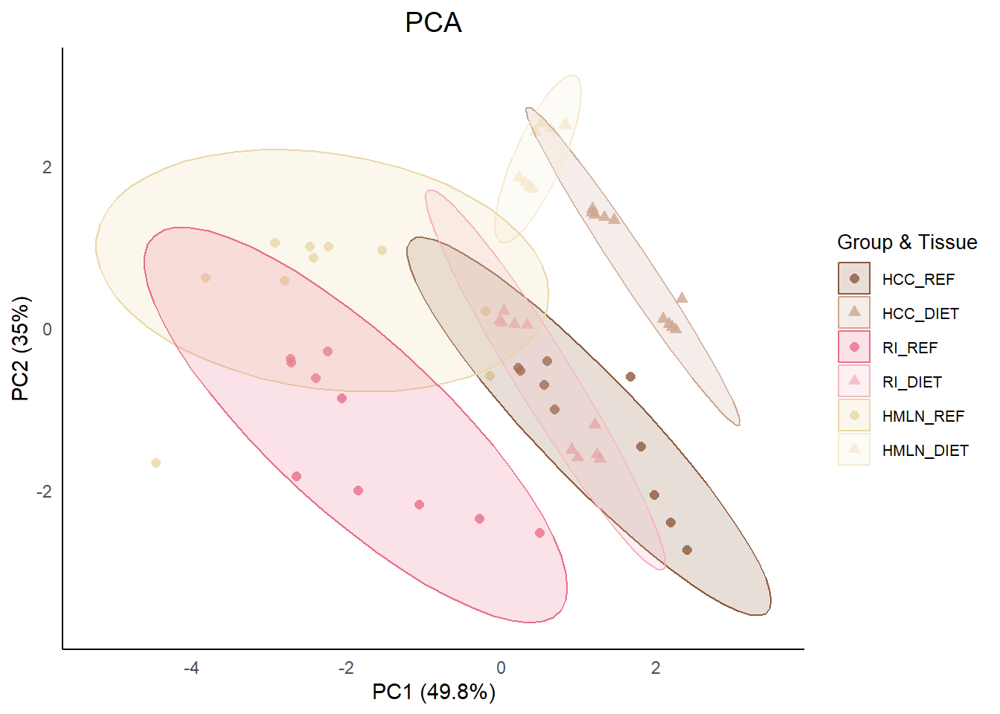
PCA - Afegir etiquetes
En el cas que es vulgui saber quina rata és quina, es poden afegir com a etiqueta. ho recomano només com a control intern, ja que carrega molt la imatge.
PCA_4 <- ggplot(pca_data_graph, aes(x = PC1, y = PC2, color = group, shape = group)) +
geom_point(size = 2, alpha = 0.8) + # Afegir els punts amb les formes i colors
stat_ellipse(aes(color = group, fill = group), alpha = 0.2, geom = "polygon") + # Afegir les elípses amb el mateix color i omplert
geom_text(aes(label = rat), hjust = -0.5, vjust = 0.5, size = 3) + # Afegir etiqueta al costat del punt
scale_color_manual(values = group_color,
name = "Group",
breaks = group_order) + # Custom colors per als punts i les elípses
scale_fill_manual(values = group_color, name = "Group",
breaks = group_order) + # Colors per a l'ompliment de les elípses
scale_shape_manual(name = "Group",
values = c(16, 17),
breaks = group_order) + # Definir formes per als punts
labs(title = "PCA",
x = paste0("PC1 (", round(summary(pca)$importance[2, 1] * 100, 1), "%)"),
y = paste0("PC2 (", round(summary(pca)$importance[2, 2] * 100, 1), "%)"),
color = "Group",
shape = "Group") + # Titols de la llegenda
theme_minimal() +
theme(legend.position = "right",
legend.title = element_text(size = 10),
legend.text = element_text(size = 8),
plot.title = element_text(hjust = 0.5, size = 14),
panel.background = element_blank(), # Treu el color de fons
panel.grid.major = element_blank(), # Treu la quadrícula gran
panel.grid.minor = element_blank(), # Treu la quadrícula petita
axis.line = element_line(color = "black"))
PCA_4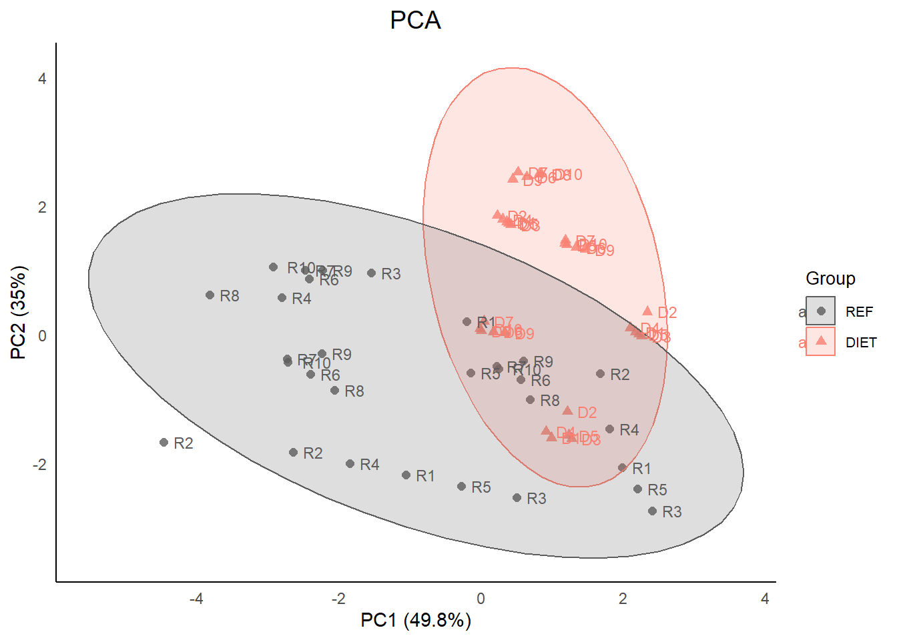
Biplot - Color per teixit i grup i forma per grup
En aquest cas la mida dels punts depèn del cos2, ens indica com de ben representats estan. Les fletxes intiquen quina variable té mes pes en aquella direcció, i la relació entre elles.
Biplot <- ggplot(pca_data_graph, aes(x = PC1, y = PC2, shape = tissue_group,
color = tissue_group, fill = tissue_group)) +
geom_point(aes(size = cos2), alpha = 0.8) +
stat_ellipse(aes(color = tissue_group, fill = tissue_group),
alpha = 0.2, geom = "polygon") +
# Fletxes dels loadings
geom_segment(data = loadings,
aes(x = 0, y = 0, xend = PC1, yend = PC2),
inherit.aes = FALSE,
arrow = arrow(length = unit(0.2, "cm")),
color = "grey50", linewidth = 0.4) +
# Etiquetes de les IgX
geom_text(data = loadings,
aes(x = PC1, y = PC2, label = name),
inherit.aes = FALSE,
color = "grey30", size = 2.5,
hjust = -0.2, # desplaça lleugerament a la dreta de la punta
vjust = 0.5,
alpha = 0.7) + # centrat verticalment
scale_color_manual(values = tissue_group_color,
name = "Group & Tissue",
labels = tissue_group_name,
breaks = tissue_group_order) +
scale_fill_manual(values = tissue_group_color,
name = "Group & Tissue",
labels = tissue_group_name,
breaks = tissue_group_order) +
scale_shape_manual(name = "Group & Tissue",
values = c(16, 17, 16, 17, 16, 17),
labels = tissue_group_name,
breaks = tissue_group_order) +
scale_size_continuous(name = "cos2", range = c(0.5, 3)) +
labs(title = "Biplot-PCA",
x = paste0("PC1 (", round(summary(pca)$importance[2, 1] * 100, 1), "%)"),
y = paste0("PC2 (", round(summary(pca)$importance[2, 2] * 100, 1), "%)")) +
theme_minimal() +
theme(legend.position = "right",
legend.title = element_text(size = 10),
legend.text = element_text(size = 8),
plot.title = element_text(hjust = 0.5, size = 14),
panel.background = element_blank(),
panel.grid.major = element_blank(),
panel.grid.minor = element_blank(),
axis.line = element_line(color = "black"),
legend.box = "vertical")
Biplot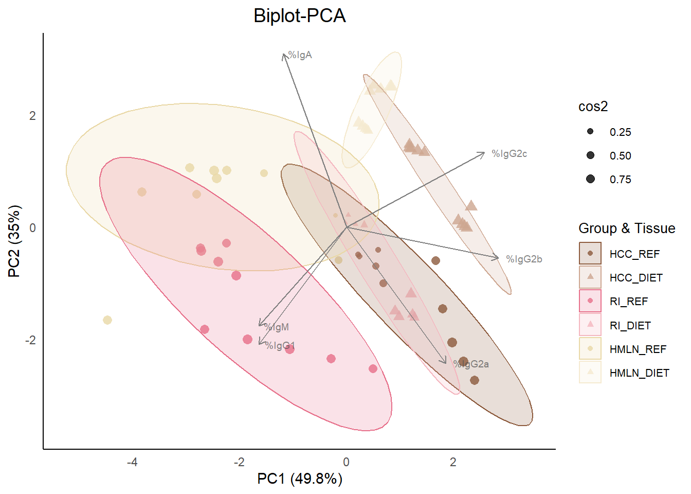
I fins aquí el PCA!